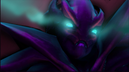
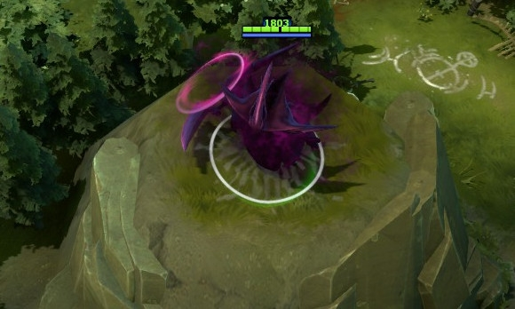

 幽鬼
幽鬼
背景故事
和所有强大的能量都喜欢欺凌弱小一样，被称为墨丘利的幽鬼也是一个拥有着强横能量的存在，同样的，她对现实世界中的冲突和纷争无比着迷。然而她平时的幽鬼形态超越了常人的感知范围，因此每当她以实体形态出现时，她不得不损失一部分自我能量——尽管她也不愿意。在战斗中，她的自我意识逐渐散落并重新聚合，她也开始有了意识。她意识到了自己是幽鬼墨丘利——其他所有的鬼影都只是她自我的阴影。出于重新凝聚的打算，她开始专注，她的心智也在不断的成熟。只有等到她取得胜利或者彻底失败时，她那超物质的形态才会得以重聚。
幽鬼之刃 在离开暗影之径后2秒内碰撞体积依然为0，作为缓冲时间。 魔法消耗：130/140/15
冷却时间：16.0/16.0/
|
荒芜 伤害在幽鬼攻击前产生。 魔法消耗：0
冷却时间：0
|
折射 幽鬼将受到的伤害折射给敌人，降低她受到的伤害。距离越远，效果越小。 幽鬼本身不承受被折射的伤害。 魔法消耗：0
冷却时间：0
|
鬼影重重 短暂延迟后，在每个敌方英雄身后创造一个复仇鬼影攻击他们。在技能持续期间内幽鬼可以使用降临将她和任一鬼影互换位置。鬼影无法控制，受到额外伤害，造成的伤害比幽鬼本体少。鬼影的基础移动速度为400，移动无视地形。 鬼影重重的幻象无法自行控制，基础移动速度为400。 魔法消耗：150/150/15
冷却时间：140/130/12
|